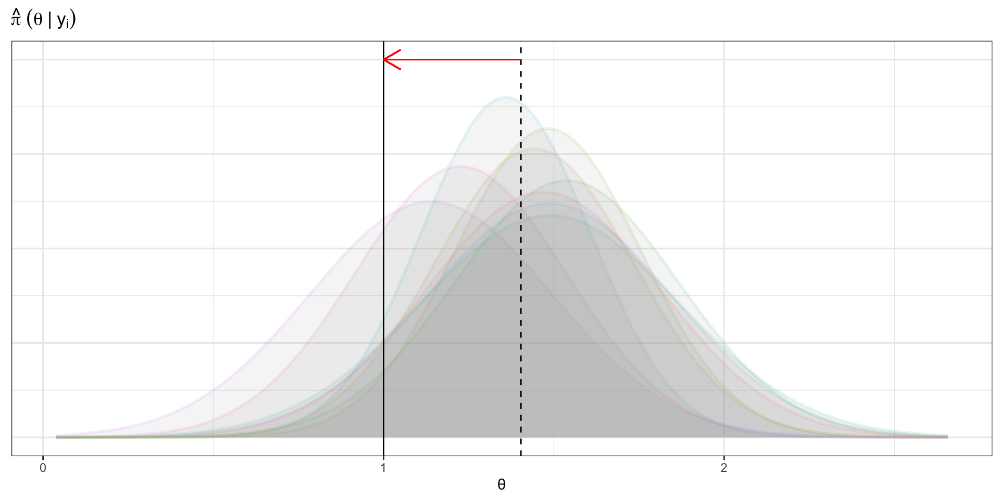

| Posterior | MSE | Bias | St. Dev | Coverage (90%) |
|---|---|---|---|---|
| Approx | 1.54 | 1.21 | 0.22 | 0 |
| Adjust (α=0) | 0.12 | 0.15 | 0.20 | 64 |
| Adjust (α=0.5) | 0.12 | 0.15 | 0.23 | 81 |
| Adjust (α=1) | 0.12 | 0.15 | 0.23 | 82 |
| True | 0.12 | -0.01 | 0.26 | 94 |
Bayesian score calibration for approximate models
Joshua J Bon
CEREMADE, Université Paris-Dauphine
About me
Statistician Develop statistical algorithms
Programmer (Attempt) to write useful software
Data scientist Design/implement statistical analyses
- PhD and PostDoc at QUT, Brisbane
- PostDoc at Paris-Dauphine PSL
Talk overview
- Motivation and intuitions
- Theory and method
- Examples
- Theory vs practice
Joint work with
- Christopher Drovandi, QUT
- David Warne, QUT
- David Nott, NUS
Motivation: “Little rascal” likelihoods
Current methods for intractable likelihoods:
- 10,000s of realisations of the data generating process (ABC, pseudo-marginal MCMC)
- May not target the true posterior (ABC)
- How to identify method failure?

But we have approximate likelihoods, models, and algorithms available…
Approximations everywhere
Likelihood approximations
- Limiting distributions
- Whittle likelihood
- Model simplification (e.g. SDE -> ODE)
- Linear noise approximation
Approximations everywhere
Posterior approximations
- Laplace
- Variational inference
- ABC
Approximations everywhere
Sampling approximations
- Importance sampling
- Sequential Monte Carlo
- Markov chain Monte Carlo (MH, ULA, MALA, HMC)
Illustration: bias correction
Assume we have a
- Posterior with intractable likelihood
- Data simulation is possible but may be expensive
- Fast approximate posterior \(\hat{\pi}(\theta~\vert~y)\) known to be biased
Can we correct the bias (average over \(\theta\)) using simulation?
Illustration: bias correction
Simulate the approximate posterior fitting process
- Draw from prior \(\bar\theta_m \sim \Pi(\cdot)\)
- Draw new data \(\tilde{y}_m \sim P(~\cdot~\vert~\bar\theta_m)\)
- Sample approximate posterior \(\hat\theta_{m,i} \sim \hat{\Pi}(~\cdot~\vert~\tilde{y}_m)\)
Illustration: bias correction
Bias correction
- Estimate average bias: \(\hat{b} = \sum_{m=1}^{M}\sum_{i=1}^{N}\left(\hat\theta_{m,i} - \bar\theta_m \right)\)
- Corrected posterior adjusts approximate samples
- Correcting transformation: \(f(x) = x - \hat{b}\)
- \(\theta \sim f_{\#}\hat{\Pi}(~\cdot~\vert~y)\)
- i.e. \(\theta = f(\hat\theta)\), \(\hat\theta \sim \hat{\Pi}(~\cdot~\vert~y)\)
Illustration: bias correction
\(\mathbb{E}(\bar{\theta}) = 1\), \(\mathbb{E}(\hat\theta~\vert~y) = 1.4\)
Model calibration by simulation
Can we correct the variance? Frequentist
Correct coverage? Frequentist
Can we correct the entire distribution? Bayesian
Theory and method
Proper scoring rules
Scoring rule
\(S(U,x)\) compares probabilistic forecast \(U\) to ground truth \(x\).
Define \(S(U,V) = \mathbb{E}_{x\sim V} S(U,x)\), where \(V\) is a probability measure.
\(S(U, \cdot)\) is strictly proper if
- \(S(U,U) \geq S(U, V)\) for all \(V\) in some family, and
- equality holds iff \(U = V\).
Very helpful proper scoring rules
\[\Pi(\cdot ~\vert~y ) = \underset{U\in \mathcal{P}}{\arg\max}~ \mathbb{E}_{\theta \sim \Pi(\cdot ~\vert~y )}\left[S(U,\theta) \right]\]
Consider the joint data-parameter space instead
\[\Pi(\text{d}\theta ~\vert~\tilde{y} )P(\text{d}\tilde{y}) = P(\tilde{y}~\vert~\theta)\Pi(\text{d}\theta )\] See (Pacchiardi and Dutta 2022) and others
Bayesian Score Calibration
Step 1: Generate
- Sample \(M\) replicates of \((\bar\theta, \tilde{y}, \hat{\theta}_{1:N})\) in parallel
- Ground truth, simulated data, posterior
Step 2: Optimise
- Find best transformation \(f\)
- Using \(S\left(f_{\#}\hat\Pi(\cdot~\vert~\tilde{y}),\bar\theta\right)\) approximated from samples
Bayesian Score Calibration
Step 3: Apply
- \(f\) to posterior of real data
- Calculate calibration diagnostics
Step 1: Generate
\[ \bar\theta^{(m)} \sim \bar\Pi \quad \rightarrow \quad \tilde{y}^{(m)} \sim P( \:\cdot\;\vert~\bar\theta^{(m)} ) \quad \rightarrow \quad \hat\theta^{(m)}_{1:N} \sim \hat{\Pi}(\;\cdot\;\vert \tilde{y}^{(m)}) \]
- \(\bar\Pi\) is an importance distribution to concentrate optimisation
- \(P(\:\cdot\;\vert~\bar\theta )\) is data generating process
- \(\hat{\Pi}(\;\cdot\;\vert \tilde{y})\) is our approximate model
\[\left\{\left(\bar\theta^{(m)}, \tilde{y}^{(m)}, \hat\theta^{(m)}_{1:N}\right)\right\}_{m=1}^M\]
Step 2: Optimise
\[f^{\star} = \underset{f \in \mathcal{F}}{\arg\max}~ \mathbb{E}\left[w(\bar\theta, \tilde{y})S\left(f_{\#}\hat\Pi(\:\cdot\:\vert\tilde{y}), \bar\theta\right) \right]\] We choose the Energy score and use a sample approximation \(S^N\left(f_{\#}\hat\Pi(\:\cdot\:\vert\tilde{y}), \bar\theta\right)\)
Step 2: Optimise
Energy score approximation with \(u\sim U = f_{\#}\hat\Pi(\:\cdot\:\vert\tilde{y})\) and \(k\) is a random permutation vector \[S^{N}(U, x) = \frac{1}{N}\sum_{i=1}^{N} \left(\frac{1}{2}\Vert u - u_{k_i} \Vert_2^{\beta} - \Vert u - x \Vert_2^{\beta}\right)\] using \(\beta = 1\)
Step 3: Apply
Adjusted posterior
For observed data \(y\) we calculate the approximate posterior and adjust.
\[\theta \sim f^{\star}_{\#}\hat\Pi(\cdot \vert y)\]
\[\theta = f^{\star}(\hat\theta)\quad\text{where}~ \hat\theta \sim \hat\Pi(\cdot \vert y)\]
Step 3: Apply
Calibration diagnostic
\[\text{CC}(\rho) = \Pr\left\{\bar\theta \in \text{Cr}(f_{\#}^{\star}\hat\Pi(\cdot ~\vert~ \tilde{y}),\rho)\right\}\]
where
\[\tilde{y} \sim P( \cdot ~\vert~\bar\theta)\]
for the target coverage \(\rho \in (0,1)\).
Step 3: Apply
Calibration diagnostic
We consider univariate credible regions and generate plots
with negligible cost: (ground truth, approximate posterior) pairs already generated.
Supporting theory
- Strictly proper score function \(S\) for \(\mathcal{P}\)
- Importance distribution \(\bar\Pi\) on \((\Theta,\vartheta)\) with \(\Pi \ll \bar\Pi\) with density \(\bar\pi\)
- Stability function \(v:\mathsf{Y} \rightarrow [0,\infty)\), measurable under \(P\) on \((\mathsf{Y}, \mathcal{Y})\)
- Define \(Q\) by change of measure \(Q(\text{d} \tilde{y}) \propto P(\text{d} \tilde{y})v(\tilde{y})\)
- Family of kernels \(\mathcal{K}\)
Supporting theory
Theorem 1:
If \(\mathcal{K}\) is sufficiently rich then the Markov kernel,
\[U^{\star}(\cdot~\vert~\cdot) \equiv \underset{U(\cdot~\vert~\cdot) \in \mathcal{K}}{\arg\max}~\mathbb{E}_{\theta \sim \bar\Pi} \mathbb{E}_{\tilde{y} \sim P(\cdot ~\vert~ \theta)}\left[w(\theta, \tilde{y}) S(U(\cdot ~\vert~ \tilde{y}),\theta) \right]\]
where \(w(\theta, \tilde{y}) = \frac{\pi(\theta)}{\bar\pi(\theta)} v(\tilde{y})\) then
\[U^{\star}(\cdot ~\vert~ \tilde{y}) = \Pi(\cdot ~\vert~ \tilde{y})\] almost surely.
Sufficiently rich kernel family
- \(\mathcal{K}\) be a family of Markov kernels
- \(\mathcal{P}\) be a class of probability measures
- \(Q\) be a probability measure on \((\mathsf{Y},\mathcal{Y})\), and \(\tilde{y}\sim Q\)
- \(\Pi(\cdot ~\vert~ \tilde{y})\) be the true posterior at \(\tilde{y}\).
We say \(\mathcal{K}\) is sufficiently rich with respect to \((Q,\mathcal{P})\) if for all \(U \in \mathcal{K}\), \(U(\cdot ~\vert~ \tilde{y}) \in \mathcal{P}\) almost surely and there exists \(U \in \mathcal{K}\) such that \(U(\cdot ~\vert~ \tilde{y}) = \Pi(\cdot ~\vert~ \tilde{y})\) almost surely.
Moment-correcting transformation
\[f(x) = L[x - \hat{\mu}(y)] + \hat{\mu}(y) + b\]
Mean \(\hat{\mu}(y) = \mathbb{E}(\hat{\theta}),\quad \hat{\theta} \sim \hat\Pi(\cdot~\vert~y)\) for \(y \in \mathsf{Y}\).
\(L\) is a lower triangular matrix with positive elements on diagonal.
What about the weights?
\[w(\theta, \tilde{y}) = \frac{\pi(\theta)}{\bar\pi(\theta)} v(\tilde{y})\]
- New flexibility from stabilising function \(v(\tilde{y})\)
- Hard to find \(v(\tilde{y})\) such that \(w(\theta, \tilde{y}) \approx 1\)
- Harder to show finite variance (?)
What about the weights?
Clip the weights
\[\hat{w}(\theta, \tilde{y}) = \min\{w(\theta, \tilde{y}), q_{1-\alpha}\}\]
where \(q_{1-\alpha}\) is \((1-\alpha)\) quantile of raw weights.
Unit weights (\(\alpha = 1\))
\[\hat{w}(\theta, \tilde{y}) = 1\]
Examples
OU Process (limiting approximation)
\[\text{d}X_t = \gamma (\mu - X_t) \text{d}t + \sigma\text{d}W_t\]
Observe final observation at time \(T\) ( \(n= 100\)):
\[X_T \sim \mathcal{N}\left( \mu + (x_0 - \mu)e^{-\gamma T}, \frac{D}{\gamma}(1- e^{-2\gamma T}) \right)\]
where \(D = \frac{\sigma^2}{2}\). Fix \(\gamma = 2\), \(T=1\), \(x_0 = 10\)
OU Process (limiting approximation)
Infer \(\mu\) and \(D\) with approximate likelihood based on
\[X_\infty \sim \mathcal{N}\left(\mu, \frac{D}{\gamma}\right)\]
OU Process (limiting approximation)
\(M = 100\) and \(\bar\Pi = \hat\Pi(\cdot~\vert~y)\) with variance scaled by 2
OU Process (limiting approximation)
Comparison for \(\mu\)
Estimated from independent replications of the method.
OU Process (limiting approximation)
Comparison for \(D\)
| Posterior | MSE | Bias | St. Dev | Coverage (90%) |
|---|---|---|---|---|
| Approx | 4.73 | 0.18 | 1.46 | 85 |
| Adjust (α=0) | 4.83 | 0.28 | 1.24 | 72 |
| Adjust (α=0.5) | 5.08 | 0.41 | 1.42 | 81 |
| Adjust (α=1) | 5.13 | 0.42 | 1.45 | 83 |
| True | 5.00 | 0.37 | 1.48 | 85 |
Estimated from independent replications of the method.
Bivariate OU Process (VI)
\[\text{d}X_t = \gamma (\mu - X_t) \text{d}t + \sigma\text{d}W_t\] \[\text{d}Y_t = \gamma (\mu - Y_t) \text{d}t + \sigma\text{d}W_t\] \[Z_t = \rho X_t + (1-\rho)Y_t\]
Model \((X_t,Z_t)\) with setup as in the univariate case, \((x_0,z_0)=(5,5)\) and use a mean-field variational approximation.
Bivariate OU Process (VI)
Bivariate OU Process (VI)
Correlation summaries
| Posterior | Mean | St. Dev. |
|---|---|---|
| Approx | 0.00 | 0.02 |
| Adjust (α=0) | 0.18 | 0.41 |
| Adjust (α=0.5) | 0.37 | 0.16 |
| Adjust (α=1) | 0.37 | 0.15 |
| True | 0.42 | 0.06 |
\(M = 100\) and \(\bar\Pi = \hat\Pi(\cdot~\vert~y)\) with variance scaled by 2
Bivariate OU Process (VI)
Lotka-Volterra SDE (quasi noisy-ABC)
\[\text{d} X_{t} = (\beta_1 X_{t} - \beta_2 X_{t} Y_{t} ) \text{d} t+ \sigma_1 \text{d} B_{t}^{1}\] \[\text{d} Y_{t} = (\beta_4 X_{t} Y_{t} - \beta_3 Y_{t} ) \text{d} t+ \sigma_2 \text{d} B_{t}^{2}\]
Lotka-Volterra SDE (quasi-ABC)
Use noisy quasi-likelihood as approximate model
\[L(\beta_{1:4}, \tau ~\vert~ x_{1:n}, y_{1:n}) = \tau^{2n}\exp\left(-\frac{\tau^2}{2} \sum_{i=1}^{n}\left[(x_i^\prime - x_i)^{2} + (y_i^\prime - y_i)^{2}\right] \right)\]
- \(\{(x_i^\prime,y_i^\prime)\}_{i=1}^{n}\) simulated conditional on \(\beta_{1:4}\)
- Prior \(\tau ∼ \text{Gamma}(2, 3)\)
Further approximation: use rough numerical integration scheme (Euler-Maruyama \(\Delta t=0.01\)).
Lotka-Volterra SDE (quasi-ABC)
Lotka-Volterra SDE (quasi-ABC)
Theory vs practice
Justification of unit weights
When we take \(\alpha =1\), \(\hat{w} = 1\)!
Theorem 2
Let \(g(x) = \bar \pi(x) / \pi(x)\) positive and continuous for \(x \in \Theta\).
If an estimator \(\theta^{\ast}_n \equiv \theta^{\ast}(\tilde{y}_{1:n})\) exists such that \(\theta^{\ast}_n \rightarrow z\) a.s. for \(n \rightarrow \infty\) when \(\tilde{y}_i \sim P(\cdot ~\vert~ z)\) for \(z \in \Theta\) then the error when using \(\hat{w} = 1\) satisfies \[\hat{w} - w(\theta,\tilde{y}_{1:n}) \rightarrow 0\] a.s. for \(n \rightarrow \infty\)
Justification of unit weights
Theorem 2 is possible because of the stability function justified by Theorem 1.
\[w(\theta, \tilde{y}) = \frac{\pi(\theta)}{\bar\pi(\theta)} v(\tilde{y})\]
Trick: set \(v(\tilde{y}) = \frac{\bar\pi(\theta^{\ast}_n )}{\pi(\theta^{\ast}_n )}\) and look at large sample properties.
Don’t need to explicitly know the estimator \(\theta^{\ast}_n\)!
Sufficiently rich kernel families
- The moment-correcting transformation is typically not sufficiently rich
- Unit weights give the stabilising function the following property
\(v(\tilde{y}_{1:n}) \rightarrow \delta_{\hat{\theta}_0}(\tilde{\theta}^\ast_n)\) for \(n\rightarrow\infty\) where
- \(\hat{\theta}_0\) is the MLE for the true data \(y\)
- \(\tilde{\theta}^\ast_n\) is the MLE for simulated data \(\tilde{y}\)
Sufficiently rich kernel families
\(v(\tilde{y}_{1:n}) \rightarrow \delta_{\hat{\theta}_0}(\tilde{\theta}^\ast_n)\)
Recall the distribution is defined as
\[ Q(\text{d}\tilde{y}) \propto P(\text{d}\tilde{y}) v(\tilde{y}) \]
- we are concentrating on simulated datasets consistent with \(\hat{\theta}_0\)
- simulated datasets with the same sufficient statistics
- approximate posteriors \(\hat\Pi(\cdot~\vert~\tilde{y})\) will be equal
- global bias and variance correction terms are sufficiently rich
Sufficiently rich kernel families
Results are targeted towards \(\bar\Pi\)
finite sample approximation using importance sampling
manipulation of the weights (unit weights)
Trade-off between:
- insufficiency of moment-correcting transformation + approximate posterior
- targeting high-probability regions of \(\bar\Pi\)
Thanks
Ongoing work: happy to talk
- Collaborators: Chris, David\(^2\)
- Helpful commentators
- Andrea for inviting me!
Contact
References
Gneiting, Tilmann, and Adrian E Raftery. 2007. “Strictly Proper Scoring Rules, Prediction, and Estimation.” Journal of the American Statistical Association 102 (477): 359–78.
Pacchiardi, Lorenzo, and Ritabrata Dutta. 2022. “Likelihood-Free Inference with Generative Neural Networks via Scoring Rule Minimization.” arXiv Preprint arXiv:2205.15784.